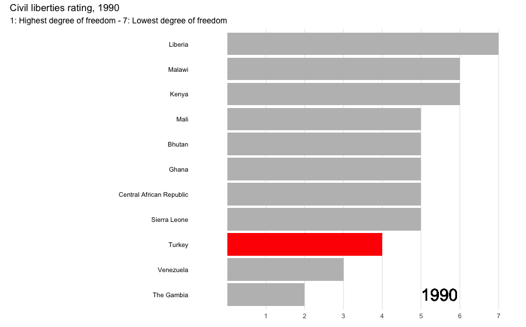
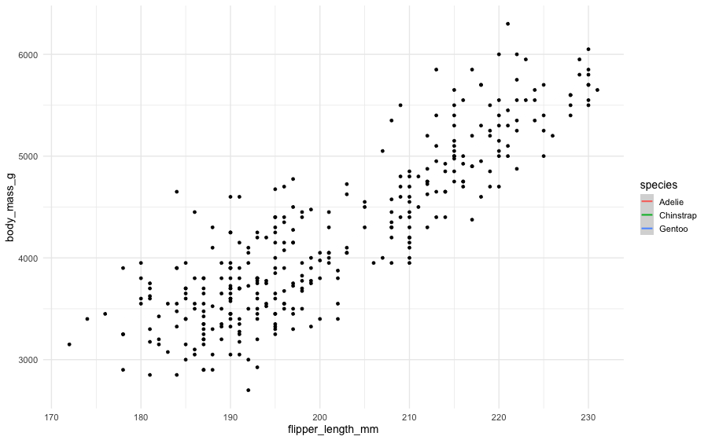
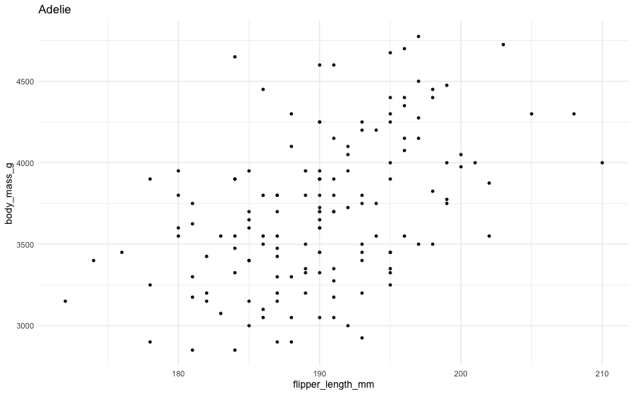
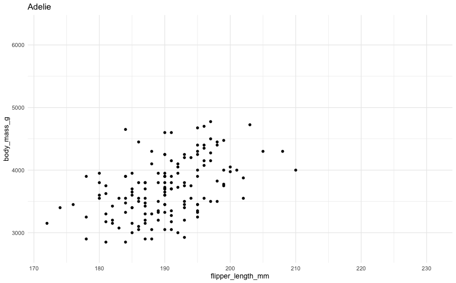
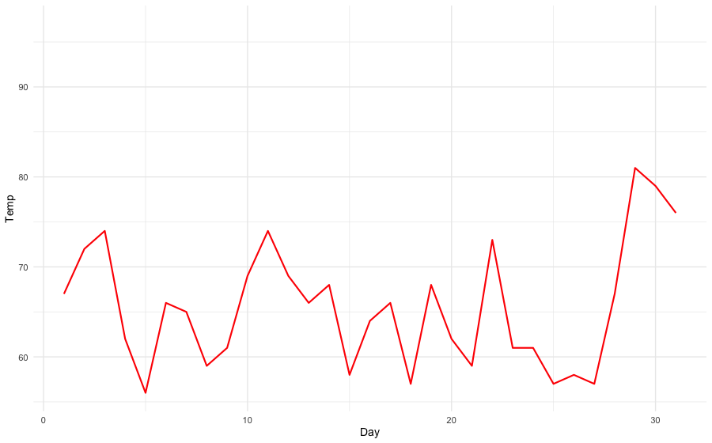
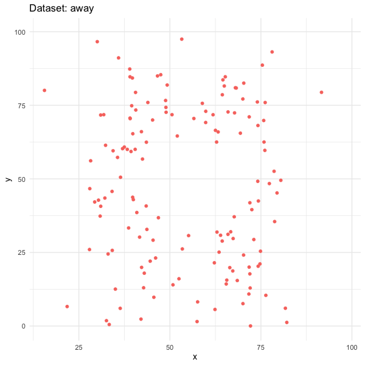

# load packages
library(countdown)
library(tidyverse)
library(gt)
library(gganimate)
library(gifski)
library(knitr)
library(kableExtra)
library(palmerpenguins)
library(transformr)
library(datasauRus)
# set theme for ggplot2
ggplot2::theme_set(ggplot2::theme_minimal(base_size = 14))
# set width of code output
options(width = 65)
# set figure parameters for knitr
knitr::opts_chunk$set(
fig.width = 7, # 7" width
fig.asp = 0.618, # the golden ratio
fig.retina = 3, # dpi multiplier for displaying HTML output on retina
fig.align = "center", # center align figures
dpi = 300 # higher dpi, sharper image
)Animation
Lecture 21
Dr. Mine Çetinkaya-Rundel
Duke University
STA 313 - Spring 2024
Setup
Animation
Philosophy
The purpose of interactivity is to display more than can be achieved with persistent plot elements, and to invite the reader to engage with the plot.
Animation allows more information to be displayed, but developer keeps control
Beware that it is easy to forget what was just displayed, so keeping some elements persistent, maybe faint, can be useful for the reader
gganimate
gganimate extends the grammar of graphics as implemented by ggplot2 to include the description of animation
It provides a range of new grammar classes that can be added to the plot object in order to customize how it should change with time

Race to the top? or the bottom?
How does gganimate work?
Start with a ggplot2 specification
Add layers with graphical primitives (geoms)
Add formatting specification
Add animation specification
A simple example
A simple example
A simple example
A simple example
A simple example
Grammar of animation
Grammar of animation
Transitions:
transition_*()defines how the data should be spread out and how it relates to itself across timeViews:
view_*()defines how the positional scales should change along the animationShadows:
shadow_*()defines how data from other points in time should be presented in the given point in timeEntrances/Exits:
enter_*()/exit_*()defines how new data should appear and how old data should disappear during the course of the animationEasing:
ease_aes()defines how different aesthetics should be eased during transitions
Transitions
How the data changes through the animation.
| Function | Description |
|---|---|
| transition_manual | Build an animation frame by frame (no tweening applied). |
| transition_states | Transition between frames of a plot (like moving between facets). |
| transition_time | Like transition_states, except animation pacing respects time. |
| transition_components | Independent animation of plot elements (by group). |
| transition_reveal | Gradually extends the data used to reveal more information. |
| transition_layers | Animate the addition of layers to the plot. Can also remove layers. |
| transition_filter | Transition between a collection of subsets from the data. |
| transition_events | Define entrance and exit times of each visual element (row of data). |
Transitions
Which transition was used in the following animations?

transition_layers()
New layers are being added (and removed) over the dots.
Views
How the plot window changes through the animation.
| Function | Description |
|---|---|
| view_follow | Change the view to follow the range of current data. |
| view_step | Similar to view_follow, except the view is static between transitions. |
| view_step_manual | Same as view_step, except view ranges are manually defined. |
| view_zoom | Similar to view_step, but appears smoother by zooming out then in. |
| view_zoom_manual | Same as view_zoom, except view ranges are manually defined. |
Views
Which view was used in the following animations?

view_follow()
Plot axis follows the range of the data.
Shadows
How the history of the animation is shown. Useful to indicate speed of changes.
| Function | Description |
|---|---|
| shadow_mark | Previous (and/or future) frames leave permananent background marks. |
| shadow_trail | Similar to shadow_mark, except marks are from tweened data. |
| shadow_wake | Shows a shadow which diminishes in size and/or opacity over time. |
Shadows
Which shadow was used in the following animations?

shadow_wake()
The older tails of the points shrink in size, leaving a “wake” behind it.
Shadows
Which shadow was used in the following animations?

shadow_mark()
Permanent marks are left by previous points in the animation.
Entrances and exits
How elements of the plot appear and disappear.
| Function | Description |
|---|---|
| enter_appear/exit_disappear | Poof! Instantly appears or disappears. |
| enter_fade/exit_fade | Opacity is used to fade in or out the elements. |
| enter_grow/exit_shrink | Element size will grow from or shrink to zero. |
| enter_recolor/exit_recolor | Change element colors to blend into the background. |
| enter_fly/exit_fly | Elements will move from/to a specific x,y position. |
| enter_drift/exit_drift | Elements will shift relative from/to their x,y position. |
| enter_reset/exit_reset | Clear all previously added entrace/exits. |
Animation controls
How data moves from one position to another.

Deeper dive
A not-so-simple example
Pass in the dataset to ggplot

A not-so-simple example
For each dataset we have x and y values, in addition we can map dataset to color
A not-so-simple example
Trying a simple scatter plot first, but there is too much information
A not-so-simple example
We can use facets to split up by dataset, revealing the different distributions
A not-so-simple example
We can just as easily turn it into an animation, transitioning between dataset states!
A not-so-simple example
Tips
Animation options
Sometimes you need more frames, sometimes fewer
- Save plot object, and use
animate()with arguments likenframes: number of frames to render (default 100)fps: framerate of the animation in frames/sec (default 10)duration: length of the animation in seconds (unset by default)- etc.
- In Quarto, save the plot and animate it with
animate().
- Learn more at https://gganimate.com/reference/animate.html
Considerations in making effective animations
- Pace: speed of animation Quick animations may be hard to follow. Slow animations are boring and tedious.
- Perplex: amount of information It is easy for animations to be overwhelming and confusing. Multiple simple animations can be easier to digest.
- Purpose: Usefulness of using animation Is animation needed? Does it provide additional value?
Racing bar chart, the making of
Go to ae-16. We’ll live-code tasks 1 and 2. You’ll work on Task 3.